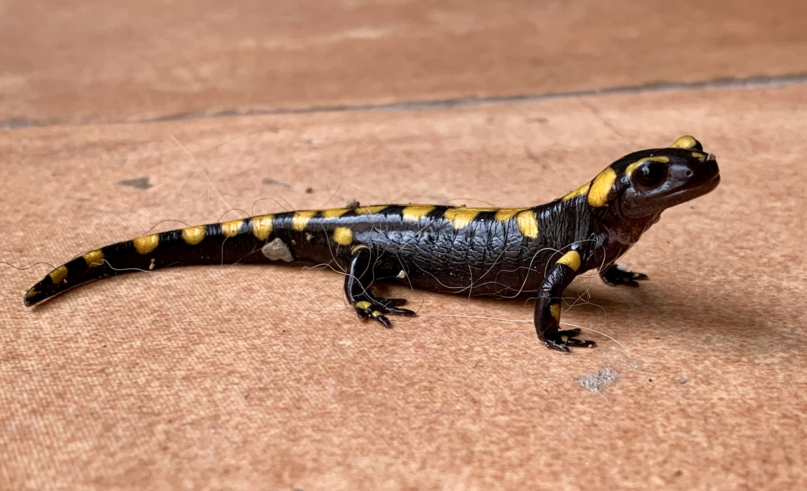

SALAMANDRA COMUN

La Salamandra salamandra, o salamandra común, es una especie de anfibio alargado y provisto
de patas y cola perteneciente a la familia Salamandridae. Su piel es lisa y brillante de color
negro con manchas irregulares amarillas, aunque estos colores pueden cambiar según sus hábitats.
Esta combinación significa peligro (significado aposemático), ya que, las glándulas que poseen
en el cuello están impregnadas de neurotixina (veneno). Por este motivo, conviene destacar que
la salamandra común es venenosa.Es el más común de los urodelos en Europa, viven en zonas húmedas y con vegetación mojada siempre cerca de un punto con agua. La salamandra común es una especie habitual de los bosques caducifolios o mixtos, así como de bosques espesos cubiertos de hojas que les permiten ocultarse
bajo troncos, piedras o la maleza.
- Sus ojos parecen dos lunas nuevas.
- le encanta caminar sobre las hojas secas mojadas como si se tratase de un cartón de lluvia.
- Es un anfibio de hábitos nocturnos y crepusculares, que solo se dejan ver durante el día si la zona en la que se encuentran alcanza niveles altos de humedad relativa.
- Adultos y larvas se alimentan de invertebrados. Mientras que los primeros lo hacen de invertebrados terrestres, los segundos se alimentan de invertebrados acuáticos.
- Gusanos, lombrices de tierra, caracoles, insectos, araneidos o gasterópodos, entre otros, componen la base de su alimentación. Por otra parte, entre sus depredadores principales podemos destacar a las nutrias.
MENU